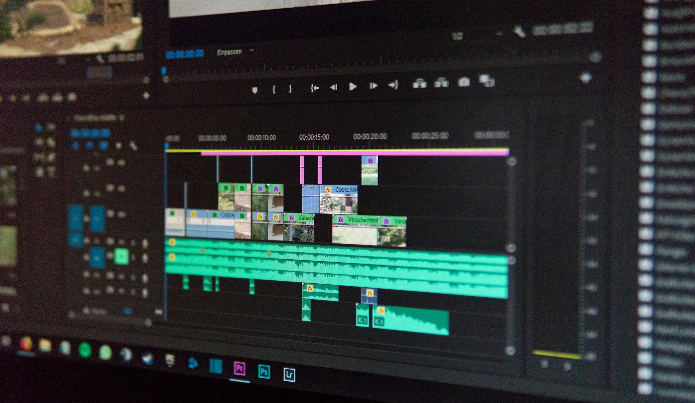
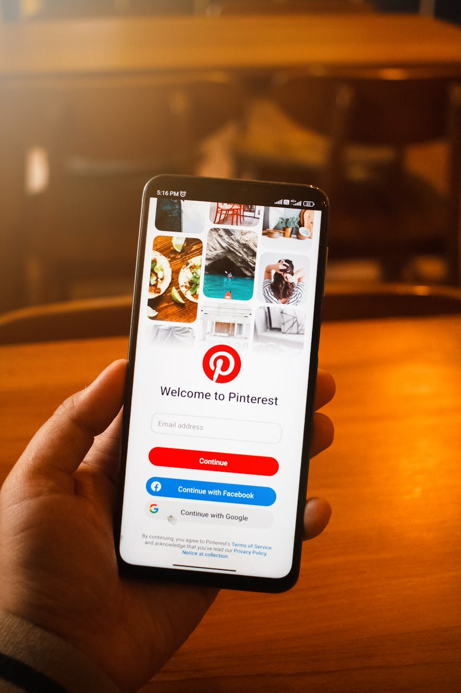

Digital production & systems specialist
Structured systems for content that has to ship on schedule
I use structured workflows, practical systems, and modern AI tools to turn ideas and requirements into digital output across content, media, marketing, and web projects.
What I do
Execution built on repeatable systems
My work combines hands-on execution with structured systems across content, marketing, and digital production.
Content & media
Video editing, short-form content, long-form production, clipping, AI-assisted media, graphic design, thumbnails, and platform-specific visual content
Systems & operations
Structured content workflows, publishing systems, batch production, asset organization, documentation, operational tracking, and repeatable production processes
Digital marketing
Facebook marketing, lead generation, Messenger inquiry workflows, audience targeting, creative testing, and Meta Ads campaign management
Digital building
Website planning and implementation through structured content modeling, information architecture, Markdown blueprints, organized assets, build instructions, and AI-assisted coding workflows
Selected execution
Evidence, not adjectives
Explore the work
Selected systems, projects, and production work

Content & media
Short-form & long-form video editing
Short-form editing, clipping, AI-driven narrative content, long-form educational videos, listing tours, and openers
View project
Systems & operations
Pinterest content operations system
High-volume execution workflow covering asset organization, templates, scheduling, publishing, and tracking across accounts
View projectSystems & operations
Short-form publishing workflow system
Format governance, batch production, fixed cadence, cross-platform adaptation, and structured logging
View projectContent & media
Graphic design
Visual work across social carousels, Pinterest publishing, WordPress thumbnails, YouTube thumbnails, and certifications
View projectDigital marketing
Meta Ads & digital marketing
Facebook marketing, lead generation, Messenger inquiry workflows, audience targeting, and campaign management
Documentation in progressDigital building
AI-assisted website building
Content modeling, Markdown blueprints, organized assets, build instructions, and AI-assisted implementation — this site is the example.
See the build chainHow I work
A repeatable approach, applied per project
Understand the requirements
Identify the objective, required output, platform, available materials, workflow constraints, and implementation requirements.
Establish the structure
Organize the work around clear systems, workflows, templates, production rules, documentation, and asset structures.
Execute the work
Content, campaigns, visual assets, or digital projects are produced and implemented according to the defined requirements.
Review and refine
Results, workflows, and outputs are reviewed to identify adjustments, improve execution, and maintain consistency.
Beyond individual deliverables
This website is the system, not just the subject
My work is not limited to producing isolated assets. I focus on understanding how the pieces connect, then applying structure where it improves execution, consistency, organization, or scalability.
Depending on the project, that may mean editing a single video, managing high-volume publishing, building a content workflow, running a Meta campaign, or structuring and implementing a website with AI-assisted tools. Hover the chain below — it's how this page came together.
Let's build something practical
If you need help turning an idea, workflow, or requirement into structured digital output, let's discuss the project
Reach out directly, or find me on the platforms below.